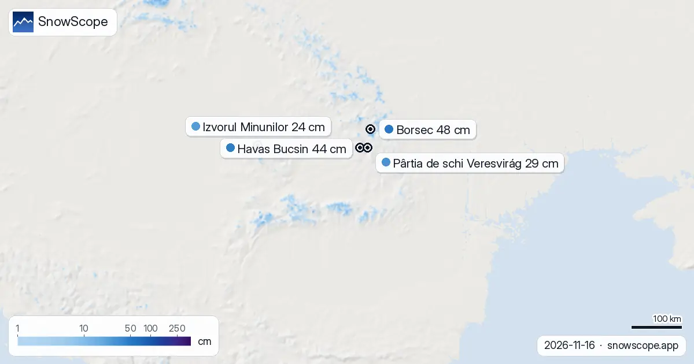

Câtă zăpadă este în România? Stratul de zăpadă și prognoza, 16 noiembrie 2026
Stratul de zăpadă în România se întinde pe aproximativ 6.630 km² (luni, 16 noiembrie). Cu 540 km² mai puțin decât ieri.
Vezi prognoza de zăpadă pentru Borsec în aplicația SnowScopeGrosimea zăpezii, alerte și harta 3D, gratuit.
Stratul de zăpadă azi
Acum o săptămână erau 12.900 km²: de atunci s-au topit 6.270 km². Terenul este în mare parte alb de la aproximativ 1.500 m în sus.
| Stațiune | Grosimea zăpezii | Zăpadă nouă, 72 h | Zilele următoare | Vârf |
|---|---|---|---|---|
| Borsec | 48 cm | 0 cm | 0 cm | 1.074 m |
| Havas Bucsin | 44 cm | 1 cm | 2 cm | 1.494 m |
| Pârtia de schi Veresvirág | 29 cm | 1 cm | 0 cm | 1.096 m |
| Izvorul Minunilor | 24 cm | 0 cm | 0 cm | 1.363 m |
| Buscat | 19 cm | 0 cm | 0 cm | 1.671 m |

Grosimea zăpezii pe altitudini
Grosimea medie a stratului de zăpadă pe altitudini: 500–1.000 m: în medie sub 1 cm (2 % acoperit); 1.000–1.500 m: în medie 1 cm (14 % acoperit); 1.500–2.000 m: în medie 3 cm (75 % acoperit); 2.000–2.500 m: în medie 9 cm (100 % acoperit).
Unde a nins
Cea mai multă zăpadă nouă în ultimele 72 de ore: până la 8 cm. Zone: Munții Retezat, Munții Bucegi și Munții Parâng.
Doar în ultimele 24 de ore au căzut până la 4 cm.
Ce înseamnă pentru pârtii
Vremea blândă topește stratul: zăpadă tare dimineața, zăpadă udă după-amiaza.
Zilele următoare
În următoarele trei zile sunt așteptați până la 5 cm, iar pe toată săptămâna până la 13 cm.
Cea mai înzăpezită zi: vineri, 20 noiembrie, cu până la 4 cm.
Mai departe, în zilele 8–14, pe pantele cele mai înzăpezite se pot adăuga până la 10 cm.
Cele mai bune stațiuni acum
Cea mai multă zăpadă pe pârtiile de sus: Borsec, 48 cm.
Stațiuni cu zăpadă pe pârtiile de sus: 26 din 52.
Urmează: Havas Bucsin (44 cm), Pârtia de schi Veresvirág (29 cm), Izvorul Minunilor (24 cm) și Buscat (19 cm).
Havas Bucsin: 1 cm de zăpadă nouă în trei zile și încă până la 2 cm până joi, 19 noiembrie.
Sfaturi pentru schiori
- Verificați dacă instalațiile funcționează înainte de plecare.
About these numbers
Resort snow depths are the deepest snow on the resort's upper slopes from the SnowScope snow model (about 1 km, run of 16 noiembrie); they are estimates for an area, not a measurement at one point. Station values are measurements on the date shown. Forecasts can change. Always read the official avalanche bulletin before going off-piste.
Cite this report
For research, teaching or the press: the numbers and charts are free to reuse under CC BY 4.0 with this citation.
SnowScope (2026), Câtă zăpadă este în România? Stratul de zăpadă și prognoza, 16 noiembrie 2026, https://snowscope.app/blog/ro/2026/11/romania-snow-report-16-november-2026.html, accessed 2026-11-16
SnowScope (Atlas Labs). (2026, November 16). Câtă zăpadă este în România? Stratul de zăpadă și prognoza, 16 noiembrie 2026. SnowScope snow reports. https://snowscope.app/blog/ro/2026/11/romania-snow-report-16-november-2026.html
BibTeX
@misc{snowscope2026romaniasnowreport16novem,
author = {{SnowScope (Atlas Labs)}},
title = {Câtă zăpadă este în România? Stratul de zăpadă și prognoza, 16 noiembrie 2026},
year = {2026},
month = nov,
howpublished = {\url{https://snowscope.app/blog/ro/2026/11/romania-snow-report-16-november-2026.html}},
note = {Published 2026-11-16 20:42 UTC; accessed 2026-11-16}
}· CC BY 4.0 · Methods, data and tools →
Borsec: snow and temperature by height, this winter vs last (tools) →
Follow Borsec
Gratuit: un mesaj când vine zăpadă nouă și prognoza în fiecare dimineață.